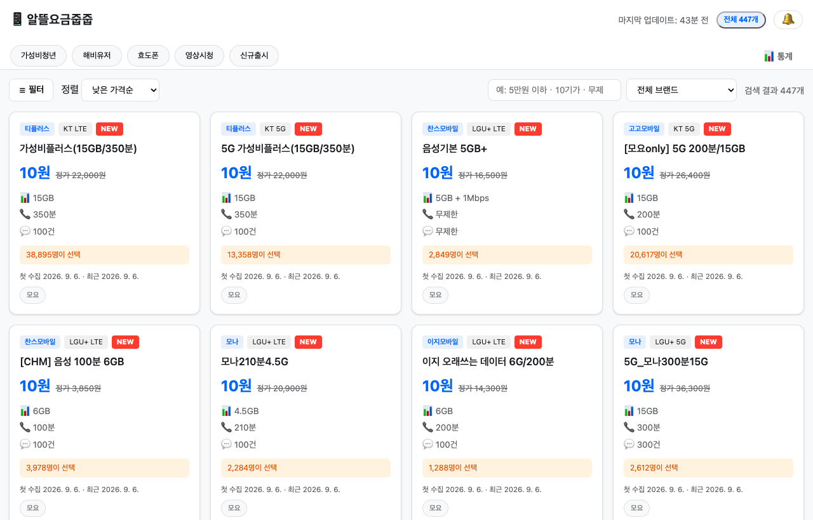
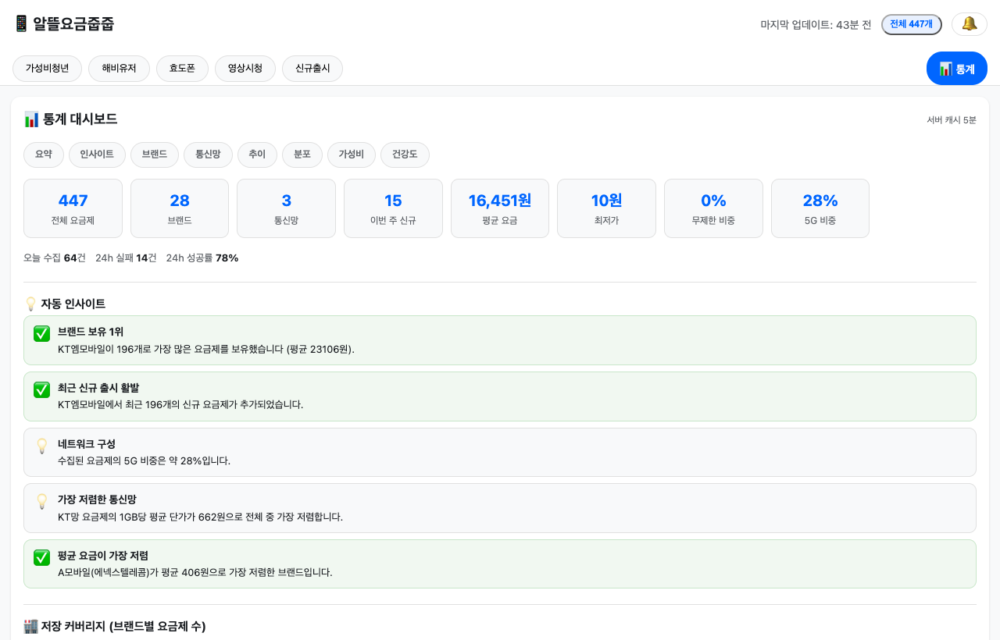
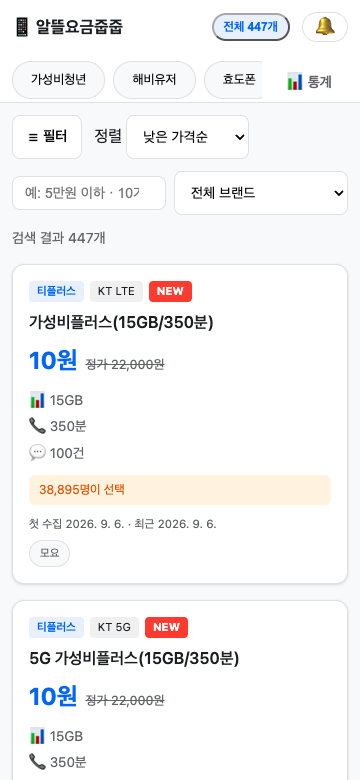
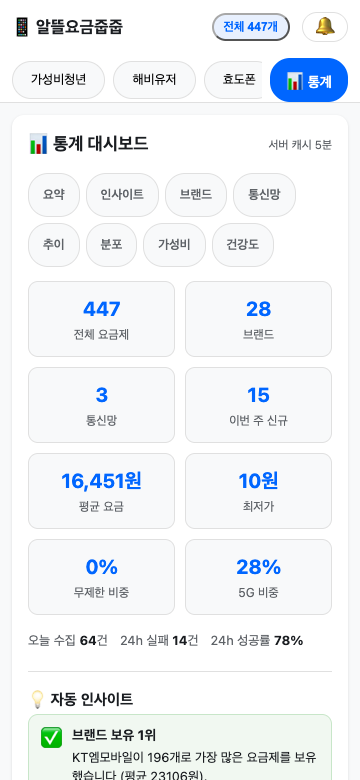

자동 수집 스케줄
WorkManager 기반 6시간 간격 워치독. 지정 브랜드별 개별 주기로 필요한 요금제만 골라 수집합니다.
설치 한 번이면, 수집부터 탐색까지 다 알아서.
WorkManager 기반 6시간 간격 워치독. 지정 브랜드별 개별 주기로 필요한 요금제만 골라 수집합니다.
가격대·데이터 용량 분포, 통신사 점유, 수집 추이, 가성비 TOP10, 수집 건강도와 자동 인사이트를 차트로 제공합니다.
"5만원 이하", "10기가", "무제한"처럼 자연스러운 조건과 ㄱㅅㅂ 같은 초성도 그대로 검색됩니다.
요금제 탭·큐레이션 태그·통계 목차 내비게이션. S22 실기 기준 가로 넘침 없이 최적화한 반응형 UI.
요금제가 갱신되면, 다음 수집 주기에 자동 반영됩니다.
| 소스 | 방식 | 주기 | 상태 |
|---|---|---|---|
| 알뜰폰허브 | HTML 카드 파싱 | 6h | 활성 |
| 모요 | /plans SSR 카드 파싱 | 6h | 활성 |
| KT엠모바일 공식 | 2단계 AJAX JSON | 12h | 활성 |
| LG헬로모바일 공식 | HTML 파싱 | 12h | 준비 중 |
| 브랜드 목록 | brand.do → carrier_brands | 주 1회 | 활성 |
갤럭시 S22 실기에서 캡처한 포터입니다. (홈 / 통계 대시보드)




Release에서 최신 APK를 받아 설치합니다. 서버 포트는 설정에서 변경할 수 있습니다(기본 3000).
앱이 백그라운드에서 스케줄에 맞춰 요금제를 수집합니다. 수동으로 즉시 수집할 수도 있어요.
같은 Wi-Fi의 브라우저에서 http://<S22 IP>:3000/에 접속해 탐색합니다.